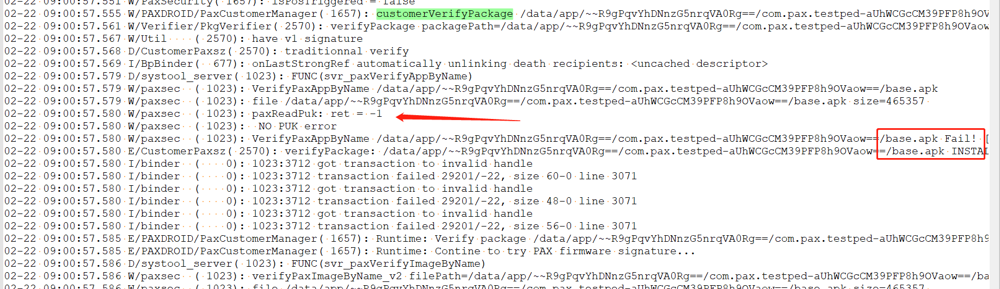
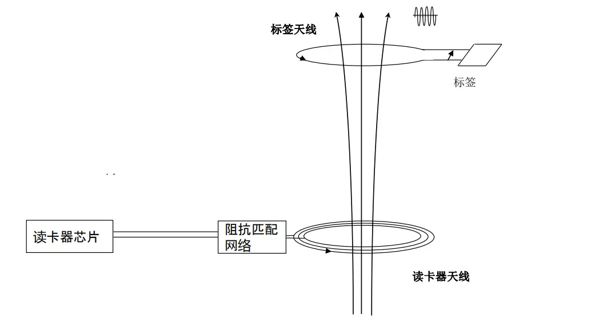
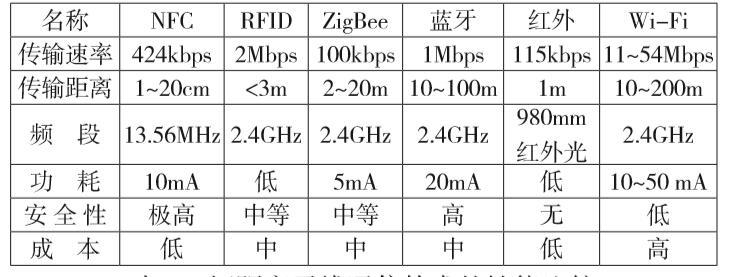

概要
测试部反馈,最新小批量样机,平均功耗大概50ma,上批次样机是好的.
新样机多了esim硬件硬件
问题
新样机
50ma平均电流,并且20s跳起一次

旧样机
旧样机正常,平均大概17ma,同一板软件,新旧样机差别esim

新旧样机batteryHistorian对比
可以看到同一软件,新旧样机,新样机,跳起来非常频繁,并且有个phone scaning一直再跑,旧样机的rki一直在跑,验证过没有影响,不影响功耗

正常注册esim的机器
可以看到,正常注册esim的机器,功耗更高,基本没有休眠,一直有一个NetworkTimeUpdateService wakelock把持着cpu

没有红茶apk的机器,注册esim的,也是有这个情况
没有红茶apk,注册esim,关闭自动同步时间,也是会概率性跳起来,并且持续时间比较久
正常注册esim机器,功耗大原因
按理说,正常注册esim的机器,流程跟正常插入sim卡应该是一致的.不应该插入sim卡,功耗正常,注册esim,功耗不正常.最终排查,正常注册esim的机器,没有后台没有绑定imei导致
正常绑定imei后,复测一晚上700分钟,平均功耗15ma,算正常.
捉取log
其他项目mtk平台,有用过esim,沟通了一下,mtk会把esim当成白卡,不断10s去搜网,所以导致功耗高
qxdm
捉取qxdmlog参考0004_Skill_daily\docs\android_kernel\0002_androidlog.md
捉取logcat -b all
解决
所以问题回归到,没有注册esim的机器,不断搜完导致,平均功耗50ma